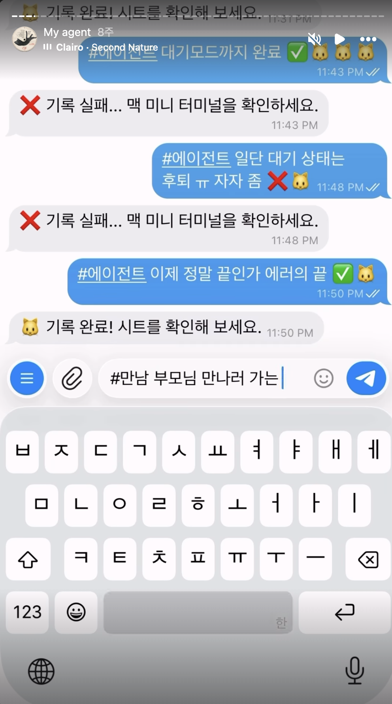
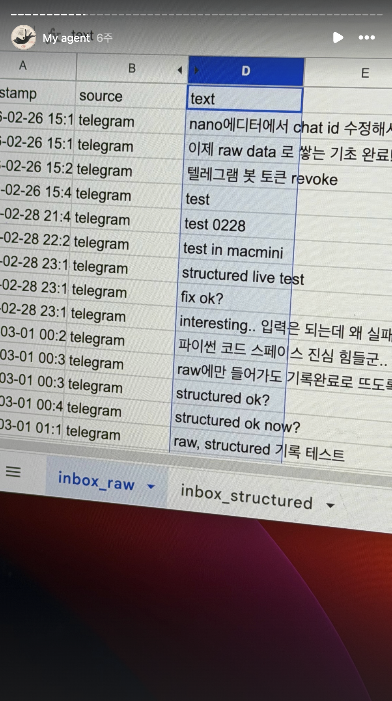
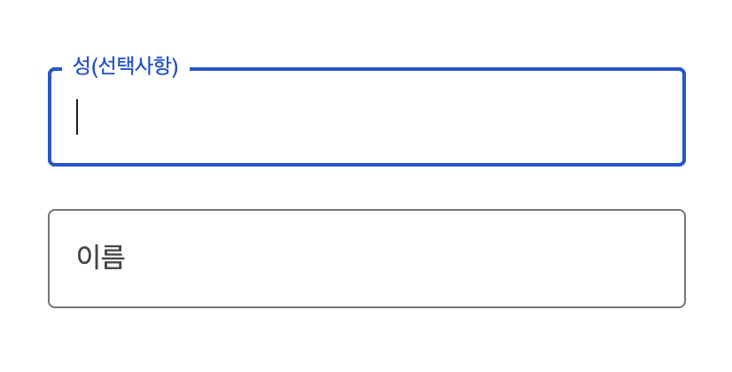
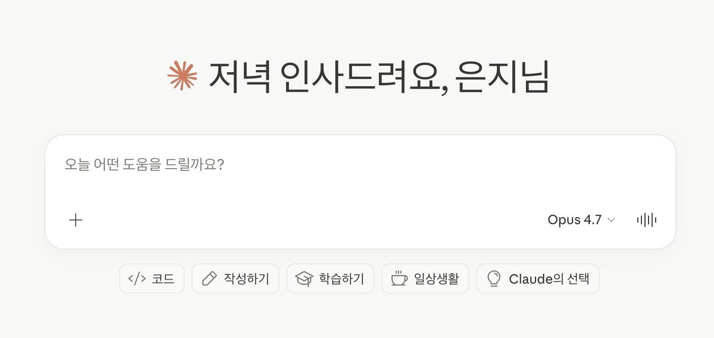

태그 입력에서
Raw 입력으로
처음엔 사용자가 #태그와 감정 점수를 직접 입력하도록 만들었습니다. 지금은 자연어로 아무 말이나 던지면 시스템이 맥락을 읽고 분류합니다. 사용자가 하던 분류 작업이 시스템으로 넘어간 거죠.
100일 중 60일, 그리고 처음 시도
100일의 탐구 시간 중 60일을 에이전트 만드는 데 썼습니다. AI를 하나라도 쓰고 있거나, 챗봇 형태의 UX를 설계하고 있는 분들이라면 이 과정을 꼭 한 번 해보셨으면 해요.
처음 회고 에이전트를 만들 때는 텔레그램 입력창에 이렇게 적었습니다.
#에이전트 오늘 기획 작업 마쳤다 🐱🐱해시태그로 카테고리를 분류하고, 고양이 이모지 개수로 기분 상태를 표시하는 식이었습니다. 나름대로 정교한 '입력 규격'을 만든 셈이죠.

그런데 지금은 그냥 이렇게 말합니다.
오늘 계획했던 기획 작업 모두 마쳤음.
그러면 시스템이 알아서 실행, 기분 좋음, 에이전트 캣으로 분류합니다. 문장 하나로 끝날 일을 왜 처음에 태그를 놓고 앉아 있었을까? 사실 굳이 직접 해보지 않으면 이 지점을 발견하기 어렵습니다.
디자이너의 관성이 발목을 잡았다
돌아보니 제가 디자이너라서 이 전환이 유독 힘들었습니다. 웹과 앱, 그 화면의 세계에서 너무 오래 지낸 거죠. 거의 20, 30년 가까운 관성 아닐까요?
디자이너의 일은 날것의 데이터를 다루고 개발 제약을 이해하는 것이기도 하지만, 결국 사용자에게 가장 가까운 모습을 상상하며 길을 닦는 일입니다. "사용자 눈에 어떤 데이터 구조가 가장 읽기 편할까?"를 고민하며 완성된 UI를 먼저 그리다 보니, 에이전트를 만들 때도 그 습관이 그대로 튀어나왔습니다.
이름 칸, 전화번호 칸… 정해진 박스에 맞춰 하나하나 적는 방식에 너무 익숙했던 겁니다. "나는 어디 사는 누구고 번호는 이거야"라고 말을 하면 시스템이 알아서 분류하고 이해하는 세상이 왔는데도 말이죠.


이 전환을 직접 겪고 나서 관련 자료를 찾아봤는데, 이미 이론이 만들어지고 있더군요. Jakob Nielsen이 2023년에 "Intent-Based Outcome Specification(의도 기반 결과 명세)"이라고 정의했습니다. 60년 만에 등장한 세 번째 UI 패러다임이라고 하네요. 컴퓨터에게 어떻게 할지가 아니라 사용자가 무엇을 원하는지를 말하는 방식으로, 통제권의 위치 자체가 뒤집히는 변화라는 거죠.1
근데 머리로 아는 것과 직접 만들어보는 건 완전히 다른 일이더라구요. 이해했다고 생각했는데도 제 머리는 익숙한 UI 화면으로 데이터를 그려보고 있었거든요.
무엇을, 어떻게 바꿨나
중요한 변화는 단순한 입력의 간소화가 아닙니다. 인간이 분류해서 시스템에 넣어주는 방식에서, 인간은 Raw한 상태로 던지고 시스템이 분류하는 것으로 책임의 주체가 바뀐 것입니다.
| 구분 | 기존 UX 사고 | 에이전트 UX 사고 |
|---|---|---|
| 핵심 흐름 | 사용자 → 인터페이스 → 결과 | 사용자 → 상태 → 판단 → 개입 |
| 설계 질문 | 어떤 버튼을 만들어야 하는가? | 언제 말하고 언제 침묵해야 하는가? |
| 데이터 처리 | 정해진 필드에 맞춰 사용자 입력 | 사용자가 던진 말을 시스템이 해석 |
- 입력단: #태그와 이모지 수치 대신 자연어 한 문장으로 전환
- 해석단: 드롭다운 선택값 대신 LLM이 문맥에서 의도(Intent)와 감정(Emotion)을 추출
- 출력단: 고정된 컬럼 조회가 아니라, 필요할 때 필요한 데이터만 조합해 답변
디자이너의 일은 어떻게 바뀌나
이 전환을 받아들이면 디자이너의 일은 근본적으로 달라집니다. 입력을 제한해서 에러를 줄이는 방식에서, 의도를 해석해서 맥락을 맞추는 방식으로 무게중심이 이동합니다.
| 과거 디자이너의 일 | 앞으로 디자이너의 일 |
|---|---|
| 드롭다운, 라디오 버튼 등 입력 필드 설계 | AI가 오해했을 때의 확인(1-step) UX 설계 |
| 에러 메시지를 쓰는 일 | 시스템이 정중하게 되묻는 '정책'을 설계하는 일 |
| "정해진 형식대로 입력하세요" | "무엇이든 던지세요, 제가 해석하겠습니다" |
기존 UX가 Input Validation(입력 제한) 중심이었다면, 에이전트 UX는 Intent Interpretation(의도 해석) 중심입니다. 이제 디자이너는 확정적인 화면을 그리는 것을 넘어, 가변적인 의도를 어떻게 핸들링할 것인가를 고민해야 합니다.
Raw 기반 UX란 결국 무엇인가
모든 필드를 채워야 답을 얻고, 정해진 단계를 거쳐야 하는 서비스의 워크플로우는 이미 사용자에게 무겁게 느껴지기 시작했습니다. 사용자는 맥락이 빠진 자연어로 말해도 숨겨진 의도까지 추론해서 제안받는 경험에 익숙해지고 있습니다.
결국 Raw 기반 UX의 본질은 데이터의 원석과 재료를 현재의 사용자 맥락에 맞게 매순간 가공해내는 것에 있습니다. 고정된 인터페이스라는 틀을 깨고, 사용자의 말 속에 담긴 의도 그 자체에 집중하게 되죠.
그렇다고 기존의 UI를 모두 대체한다는 이야기는 아닙니다. 시스템이 알아서 해석하는 데에 한계가 있고, 사용자도 자신의 의도를 말로 모두 설명하기 힘드니까요. 자료를 더 찾아보니 Nielsen은 이걸 articulation barrier(표현 장벽)이라고 부르더라구요. 자연어로 자기 의도를 정확히 말할 수 있는 사람이 생각보다 많지 않다는 거예요. 글로 써본 사람들은 알겠지만, 머릿속에 있는 걸 문장으로 옮기는 일 자체가 어렵잖아요. ChatGPT 같은 인터페이스가 가진 가장 큰 약점이 바로 이거라고 해요.2
그래서 디자이너의 새 일은 단순히 "input 박스 없애기"가 아니라, 사용자가 의도를 더 잘 표현하도록 돕는 보조 장치를 설계하는 일에 더 가까운 것 같습니다. 프롬프트 리라이트, 추천 질문으로 입력을 강제하던 것에서 의도 보조로 바뀌는 거죠.
직군의 경계가 흐려진다는 불안감이 지난 후, 이젠 서로의 영역을 이해할 수 있는 마법 도구가 쥐어진 느낌입니다. 완결의 단계에만 머무르지 말고, 흐름을 직접 조정해 나가는 이 미학을 이제 디자이너들이 가장 재밌게 유영할 차례 아닐까요?
1 Jakob Nielsen, "AI: First New UI Paradigm in 60 Years," Nielsen Norman Group, 2023. https://www.nngroup.com/articles/ai-paradigm/
2 Jakob Nielsen, "The Articulation Barrier: Prompt-Driven AI UX Hurts Usability," 2023. https://www.uxtigers.com/post/ai-articulation-barrier